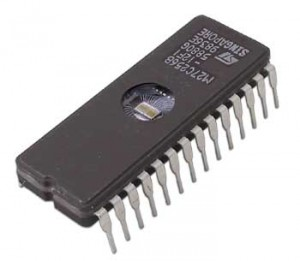

🔢 Componentes Digitales ▼
Los componentes digitales son la base lógica que procesa la información en formato binario (bits 0 y 1). Controlan el flujo de datos y las operaciones fundamentales del sistema.
| Componente | Función Detallada | Cómo Funciona | Imagen |
|---|---|---|---|
| Microprocesador (CPU) | Ejecuta instrucciones, procesa datos y controla el funcionamiento general del sistema. | Está compuesto por la Unidad Aritmético Lógica (ALU), Unidad de Control y registros que manejan operaciones lógicas, aritméticas y flujo de datos. |  |
| Memoria RAM | Almacena temporalmente datos e instrucciones que la CPU usa mientras el sistema está encendido. | Funciona como memoria volátil, permitiendo acceso ultra rápido para lectura/escritura, facilitando la ejecución fluida de programas. |  |
| Memoria ROM | Almacena datos e instrucciones permanentes, como el firmware que arranca la computadora. | Es memoria no volátil, contiene programas esenciales que no cambian y que la CPU usa para inicializar el sistema. |  |
| Tarjeta Madre (Motherboard) | Conecta y permite la comunicación entre todos los componentes del sistema. | Contiene circuitos impresos que unen CPU, memoria, buses, ranuras de expansión y periféricos en un solo sistema integral. |  |
| Chipset | Coordina las comunicaciones entre CPU, memoria y periféricos. | Actúa como puente, controlando flujos de datos y facilitando el acceso eficiente a recursos internos y externos. |  |